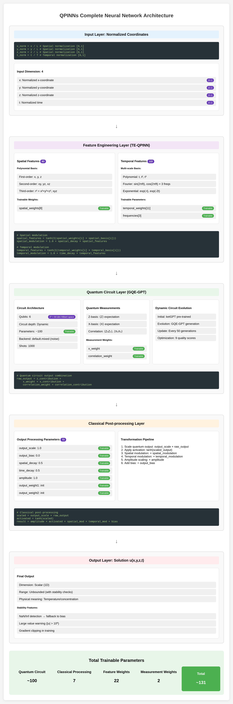
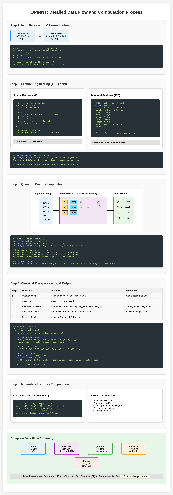

QPINNs Implementation
This chapter details the implementation of Quantum Physics-Informed Neural Networks (QPINNs) with advanced features including ketGPT, GQE-GPT circuit generation, and trainable embeddings.

GQE-GPT Architecture Overview
The Generative Quantum Eigensolver with GPT (GQE-GPT) system consists of three main components:
GPT-based Circuit Generator: Generates quantum circuit architectures
Quantum Circuit Executor: Evaluates circuits on quantum simulators/hardware
Multi-objective Optimizer: Selects optimal circuits using NSGA-II
class GQEQuantumPINN:
def __init__(self,
n_qubits=6,
backend='default.mixed',
shots=1000,
noise_model='realistic',
use_gpt_circuit_generation=True):
KetGPT Integration
The system leverages the ketGPT dataset for pre-training the circuit generation model:
Dataset Loading
def _initialize_ketgpt_dataset(self):
"""Load and preprocess ketGPT dataset
Reference: Apak et al. "KetGPT – Dataset Augmentation of
Quantum Circuits using Transformers" arXiv:2402.13352 (2024)
"""
[ketgpt_dataset] = qml.data.load("ketgpt")
# Extract circuit data
for circuit in ketgpt_dataset.circuits:
gate_sequence = self._pennylane_to_gate_sequence(circuit)
if gate_sequence and len(gate_sequence) <= self.max_circuit_depth:
self.pretrain_data.append({
'gate_sequence': gate_sequence,
'energy': -1.0 - 0.01 * i,
'score': 0.8 + 0.001 * i
})
GPT Model Architecture
The transformer-based GPT model for circuit generation:
class QuantumCircuitGPT(nn.Module):
def __init__(self, vocab_size, n_embd=256, n_head=8,
n_layer=6, block_size=128, dropout=0.1):
super().__init__()
self.token_embedding = nn.Embedding(vocab_size, n_embd)
self.position_embedding = nn.Embedding(block_size, n_embd)
self.blocks = nn.Sequential(*[Block(n_embd, n_head, dropout)
for _ in range(n_layer)])
self.ln_f = nn.LayerNorm(n_embd)
self.head = nn.Linear(n_embd, vocab_size)
Circuit Tokenization
Quantum gates are converted to tokens for GPT processing:
# Gate vocabulary
gate_tokens = ['<PAD>', '<START>', '<END>', '<SEP>',
'H', 'X', 'Y', 'Z', 'S', 'T', 'CNOT', 'CZ', 'SWAP',
'RX', 'RY', 'RZ', 'Q0', 'Q1', 'Q2', 'Q3', 'Q4', 'Q5',
'PARAM_0', 'PARAM_1', ..., 'PARAM_15']
Quantum Circuit Template
The quantum circuit architecture is defined by templates:
Gate Sequence Structure
class QuantumCircuitTemplate:
def __init__(self):
self.gate_sequence = [
{'gate': 'RY', 'qubits': [0], 'trainable': True, 'param_idx': 0},
{'gate': 'RY', 'qubits': [1], 'trainable': True, 'param_idx': 1},
{'gate': 'CNOT', 'qubits': [0, 1], 'trainable': False},
...
]
Hardware-Efficient Ansatz
The implementation uses hardware-efficient ansätze optimized for NISQ devices:
where \(E\) represents the hardware connectivity graph.
Trainable Embedding (TE-QPINN)
The TE-QPINN approach introduces learnable feature embeddings:
Spatial Feature Embedding
def _compute_spatial_features(self, x_norm, y_norm, z_norm):
"""Compute polynomial spatial features
Reference: TE-QPINN (2025) - polynomial basis for spatial embedding
"""
features = [
x_norm, # Linear terms
y_norm,
z_norm,
x_norm * y_norm, # Quadratic interactions
y_norm * z_norm,
x_norm * z_norm,
x_norm**2 + y_norm**2 + z_norm**2, # Radial component
x_norm * y_norm * z_norm # Cubic interaction
]
# Weighted combination with learnable weights
weighted_sum = sum(w * f for w, f in
zip(self.spatial_feature_weights, features))
return np.tanh(weighted_sum)
The spatial features use 8 polynomial basis functions:
where \(\phi_i^{(s)}\) are: \(\{x, y, z, xy, yz, xz, x^2+y^2+z^2, xyz\}\)
Temporal Feature Embedding
Multi-scale temporal features with learnable frequencies:
def _compute_temporal_features(self, t_norm):
"""Compute mixed-basis temporal features"""
features = []
# Polynomial basis
features.extend([t_norm, t_norm**2, t_norm**3])
# Fourier basis with learnable frequencies
frequencies = np.abs(self.temporal_frequencies.numpy())
for freq in frequencies:
features.append(np.sin(2 * np.pi * freq * t_norm))
features.append(np.cos(2 * np.pi * freq * t_norm))
# Exponential basis
features.append(np.exp(-t_norm))
features.append(1.0 - np.exp(-t_norm))
# Learnable weighted combination
weighted_sum = sum(w * f for w, f in
zip(self.temporal_feature_weights, features))
return np.tanh(weighted_sum)
The temporal features use mixed basis with learnable frequencies:
where \(\phi_j^{(t)}\) include: - Polynomial: \(\{t, t^2, t^3\}\) - Fourier: \(\{\sin(2\pi f_k t), \cos(2\pi f_k t)\}\) with learnable \(f_k\) - Exponential: \(\{e^{-t}, 1-e^{-t}\}\)
Parameter Initialization
def _initialize_feature_parameters(self):
"""Initialize learnable embedding parameters
References:
- Li et al. (2021) ICLR - Fourier frequency initialization
- TE-QPINN (2025) - Feature design
"""
# Spatial features: 8 weights
self.spatial_feature_weights = qml.numpy.array(
np.random.normal(0, 0.1, size=8),
requires_grad=True
)
# Temporal frequencies: logarithmic spacing
initial_frequencies = np.array([2**i for i in range(3)])
self.temporal_frequencies = qml.numpy.array(
initial_frequencies,
requires_grad=True
)
# Temporal feature weights: 11 total
self.temporal_feature_weights = qml.numpy.array(
np.random.normal(0, 0.1, size=11),
requires_grad=True
)
Circuit Optimization with NSGA-II
Multi-objective optimization for quantum circuits:
Objective Functions
The QPINN uses five objectives for circuit optimization:
def _evaluate_template(self, template):
objectives = []
# 1. Hardware efficiency
hardware_score = self._compute_hardware_efficiency_scientific(template)
objectives.append(1.0 - hardware_score) # Minimize
# 2. Noise resilience
noise_score = self._compute_noise_resilience_scientific(template)
objectives.append(1.0 - noise_score) # Minimize
# 3. Circuit depth
depth = self._estimate_circuit_depth_from_template(template)
objectives.append(depth / 100.0) # Normalized
# 4. Expressivity
expressivity = self._compute_expressivity_scientific(template)
objectives.append(1.0 - expressivity) # Minimize
# 5. Energy estimation quality
energy_quality = self._compute_energy_estimation_quality_scientific(
template, training_data)
objectives.append(1.0 - energy_quality) # Minimize
return torch.tensor(objectives)
Hardware Efficiency Calculation
Based on real quantum device characteristics:
def _compute_hardware_efficiency_scientific(self, template):
"""Reference: Kandala et al. Nature 549, 242-246 (2017)"""
# Gate times (ns)
gate_times = {
'RX': 35.56, 'RY': 35.56, 'RZ': 0.0, # Virtual Z
'CNOT': 300.8, 'CZ': 300.8, 'SWAP': 902.4
}
# Gate error rates
gate_errors = {
'RX': 2.16e-4, 'RY': 2.16e-4, 'RZ': 0.0,
'CNOT': 9.11e-3, 'CZ': 9.11e-3, 'SWAP': 2.73e-2
}
# Calculate total time and error probability
total_time = sum(gate_times.get(gate['gate'], 50.0)
for gate in template.gate_sequence)
# Score based on time efficiency and error rate
time_efficiency = np.exp(-total_time / 5000.0)
error_efficiency = (1 - total_error_prob) ** 2
return 0.3 * time_efficiency + 0.3 * error_efficiency + ...
Noise Modeling
Realistic noise models for NISQ devices:
Noise Channels
def _apply_hardware_noise(self, wire):
"""Apply realistic noise channels
Reference: Trahan et al. Entropy 26(8):649 (2024)
"""
noise_rates = {
'light': {'depolarizing': 0.001, 'amplitude_damping': 0.0005},
'realistic': {'depolarizing': 0.005, 'amplitude_damping': 0.002},
'heavy': {'depolarizing': 0.01, 'amplitude_damping': 0.005}
}
rates = noise_rates.get(self.noise_model, noise_rates['realistic'])
if rates['depolarizing'] > 0:
qml.DepolarizingChannel(rates['depolarizing'], wires=wire)
if rates['amplitude_damping'] > 0:
qml.AmplitudeDamping(rates['amplitude_damping'], wires=wire)
Measurement Processing
Quantum measurements are processed to extract the solution:
Z-basis Measurements
def _compute_z_contribution(self, measurements_array, n_measurements, t):
"""Z-basis measurement value calculation"""
if n_measurements >= 4:
z_measurements = measurements_array[:4]
# Time-modulated weights
base_weights = np.array([0.4, 0.3, 0.2, 0.1])
time_modulation = 1.0 + 0.5 * np.sin(t * np.pi / T)
z_weights = base_weights * time_modulation
return np.sum(z_measurements * z_weights)
Final Output Computation
def _compute_final_output(self, z_contribution, x_contribution,
correlation_contribution, x, y, z, t):
"""Scientifically grounded output transformation
Reference: Trahan et al. (2024) - tanh activation recommended
"""
# Quantum measurement combination
raw_output = (z_contribution +
self.x_weight * x_contribution +
self.correlation_weight * correlation_contribution)
# Output scaling and activation
scaled_output = self.output_scale * raw_output
activated_output = np.tanh(scaled_output)
# Feature-based modulation
spatial_modulation = 1.0 + self.spatial_decay * spatial_features
temporal_modulation = 1.0 + self.time_decay * temporal_features
result = (self.amplitude * activated_output *
spatial_modulation * temporal_modulation +
self.output_bias)
Bayesian Multi-Objective Optimization
The system uses Bayesian optimization with 9 objectives for quantum circuit search:
Nine Objective Functions
def evaluate_circuit_multi_objective(self, template, training_data=None):
"""Evaluate 9 objectives for quantum circuit optimization"""
objectives = []
# 1. Hardware efficiency (minimize)
hardware_score = self._compute_hardware_efficiency_scientific(template)
objectives.append(1.0 - hardware_score)
# 2. Noise resilience (minimize)
noise_score = self._compute_noise_resilience_scientific(template)
objectives.append(1.0 - noise_score)
# 3. Expressivity (minimize inverse)
expressivity = self._compute_expressivity_scientific(template)
objectives.append(1.0 - expressivity)
# 4. Mitigation compatibility (minimize)
mitigation_score = self._compute_mitigation_compatibility(template)
objectives.append(1.0 - mitigation_score)
# 5. Trainability (minimize)
trainability = self._compute_trainability_scientific(template)
objectives.append(1.0 - trainability)
# 6. Entanglement capability (minimize)
entanglement = self._compute_entanglement_capability(template)
objectives.append(1.0 - entanglement)
# 7. Circuit depth efficiency (minimize)
depth = self._estimate_circuit_depth_from_template(template)
objectives.append(depth / 100.0)
# 8. Parameter efficiency (minimize)
param_efficiency = self._compute_parameter_efficiency(template)
objectives.append(1.0 - param_efficiency)
# 9. Energy estimation quality (minimize)
energy_quality = self._compute_energy_estimation_quality_scientific(
template, training_data)
objectives.append(1.0 - energy_quality)
return torch.tensor(objectives)
Unsupervised Energy Estimation
The energy estimation quality (9th objective) evaluates the quantum circuit’s ability to estimate energy without supervision:
def _compute_energy_estimation_quality_scientific(self, template, training_data):
"""Scientific calculation of energy estimation quality
References:
- Cerezo et al. (2021) Nature Communications 12, 1791
- Li et al. (2020) Physical Review Research 2, 013020
"""
# 1. Energy landscape smoothness
landscape_smoothness = self._evaluate_energy_landscape_smoothness(template)
# 2. Convergence properties
convergence_score = self._evaluate_energy_convergence(template, training_data)
# 3. Noise stability
noise_stability = self._evaluate_energy_noise_stability(template)
# 4. Information theoretical quality
information_quality = self._evaluate_energy_information_quality(template)
# 5. Quantum Fisher information
fisher_score = self._compute_quantum_fisher_information_score(template)
# Weighted combination
energy_quality = (
0.25 * landscape_smoothness +
0.20 * convergence_score +
0.20 * noise_stability +
0.20 * information_quality +
0.15 * fisher_score
)
return energy_quality
Energy Landscape Analysis
def _evaluate_energy_landscape_smoothness(self, template):
"""Evaluate smoothness of energy landscape for optimization"""
# Parameter perturbation analysis
n_samples = 10
perturbation_scale = 0.1
base_params = np.random.uniform(-np.pi, np.pi,
len(template.parameter_map))
energies = []
for _ in range(n_samples):
perturbed_params = base_params + np.random.normal(
0, perturbation_scale, len(base_params))
# Estimate energy with perturbed parameters
energy = self._estimate_single_energy(template, perturbed_params)
energies.append(energy)
# Smoothness metric based on variance
energy_variance = np.var(energies)
smoothness = np.exp(-energy_variance / 0.1)
return smoothness
GQE-GPT Circuit Generation Process
The complete circuit generation process with GPT:
Context Creation
context = self._create_generation_context(optimization_data) # Contains: current performance, target objectives, preference weights
Candidate Generation
candidates = [] for _ in range(n_candidates): # Generate circuit with contextual bias circuit_tokens = self._generate_circuit_with_context( gpt_model, context, temperature=0.8) # Convert to template template = self._tokens_to_template(circuit_tokens) candidates.append(template)
Multi-objective Evaluation
# Batch evaluation of 9 objectives evaluated_candidates = self._batch_evaluate_candidates( candidates, mo_optimizer, context)
Pareto Selection
# Find Pareto-optimal circuits pareto_indices = self._find_pareto_optimal(evaluated_candidates) pareto_candidates = [evaluated_candidates[i] for i in pareto_indices]
Preference-based Selection
# Select best circuit based on preferences best_circuit = self._select_best_from_pareto( pareto_candidates, context)
Bayesian Acquisition Function
The Bayesian optimizer uses expected improvement for multi-objective optimization:
def _bayesian_acquisition(self, candidates, gp_models):
"""Multi-objective expected improvement"""
mean_predictions = []
std_predictions = []
for model in gp_models:
mean, std = model.predict(candidates, return_std=True)
mean_predictions.append(mean)
std_predictions.append(std)
# Compute Pareto improvement probability
improvement = self._compute_pareto_improvement(
mean_predictions, std_predictions)
return improvement
Training Loss Functions
During QPINN training with NSGA-II, five objectives are optimized:
def objective_function_qpinn(params_array):
"""QPINN multi-objective function for NSGA-II"""
# Set parameters
self._load_parameters_from_array_safe(params_array)
# Compute predictions on test points
predictions = []
for point in test_points:
u_pred = self.forward([point.x, point.y, point.z, point.t])
predictions.append(u_pred)
# 1. Initial condition loss
initial_loss = np.mean([
abs(pred - point.u_true)**2
for pred, point in zip(predictions, test_points)
if point.t == 0.0
])
# 2. Peak value loss
peak_loss = np.mean([
abs(pred - analytical_solution(L/2, L/2, L/2, point.t))**2
for pred, point in zip(predictions, test_points)
if point.x == L/2 and point.y == L/2 and point.z == L/2
])
# 3. Boundary condition loss
boundary_loss = np.mean([
abs(pred)**2
for pred, point in zip(predictions, test_points)
if (point.x == 0 or point.x == L or
point.y == 0 or point.y == L or
point.z == 0 or point.z == L)
])
# 4. PDE residual loss (finite differences)
pde_loss = self._compute_pde_residual_fd(predictions, test_points)
# 5. Trace distance (quantum-specific)
trace_loss = self._compute_trace_distance()
return [initial_loss, peak_loss, boundary_loss, pde_loss, trace_loss]
Trace Distance Calculation
The trace distance measures quantum state similarity:
def _compute_trace_distance(self):
"""Compute trace distance for quantum state comparison"""
# Get quantum state from circuit
state = self.dev.state
# Target state (approximation of thermal state)
target_state = self._construct_target_state()
# Trace distance: Tr|ρ - σ|
diff = state - target_state
trace_distance = np.trace(np.abs(diff))
return trace_distance / 2.0 # Normalized
Circuit Training Process
The complete QPINN training flow:

Initial Circuit Generation
Hardware-efficient ansatz or GPT-generated circuit
9-objective evaluation for circuit quality
Select best initial circuit
NSGA-II Training
Optimize circuit parameters for 5 PDE-specific objectives
Population: 30 individuals
Generations: 200
Dynamic Circuit Updates
Every 50 generations, evaluate if circuit update needed
Generate new candidates with GQE-GPT
Replace circuit if improvement found
Final Evaluation
Select best solution from Pareto front
Evaluate on full grid
References
Apak et al. (2024) “KetGPT – Dataset Augmentation of Quantum Circuits”
Trahan et al. (2024) “Quantum Physics-Informed Neural Networks”
TE-QPINN (2025) “Trainable embedding quantum physics informed neural networks”
Panichi et al. (2025) “Quantum physics informed neural networks for multi-variable PDEs”
Nakaji & Yamamoto (2021) “Quantum circuit design by Generative Quantum Eigensolver”